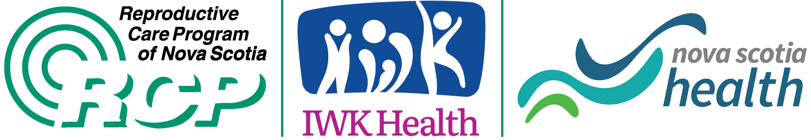

Contact
For more information, please contact:
Cora Cole Surveillance of Congenital Anomalies Nova Scotia cora.cole@iwk.nshealth.ca
Suggested citation: Surveillance of Congenital Anomalies Nova Scotia, Reproductive Care Program of Nova Scotia, The Izaak Walton Killam Health Centre (IWK) 2022.